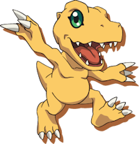
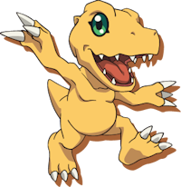
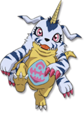
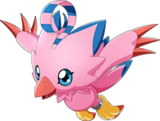
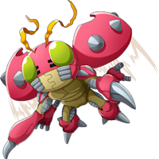
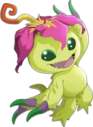
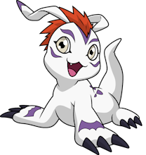
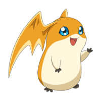
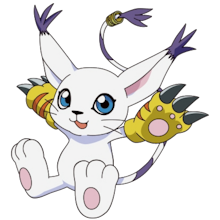
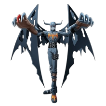

AGUMON
Agumon is a short and stout Tyrannosaurus rex-like Digimon.
- Type: Reptile
- Attribute: Vaccine, Virus
- Level: Rookie
- DigiDestined: Taichi "Tai" Kamiya
- Further Evolutions: Greymon, MetalGreymon, WarGreymon
Agumon is a short and stout Tyrannosaurus rex-like Digimon.
Gabumon is a maroon-eyed yellow-skinned lizard in a bluish-white pelt.
Biyomon is a pink bird with arm-like wings, a feather mane, a red beak and blue eyes.
Tentomon is a bipedal Digimon with four arms with the first pair each ending in a single grey talon.
Palmon is a green, bipedal, Mandrake-like Digimon with a tail and small bumps lining its back.
Gomamon is a white, furry sea lion with no nose and long ears, purple markings, an orange-red mane and large claws.
Patamon is a small flying creature with light blue eyes, bat-like wings which could possibly be its ears, and a short, stubby tail.
Gatomon appears similar to a white Egyptian cat wearing large lime yellow and red striped gloves with black claws sticking out of them.
Devimon has fingers elongated into claws, devil's horns, tattered wings, and skulls on its shoulder and knee.
